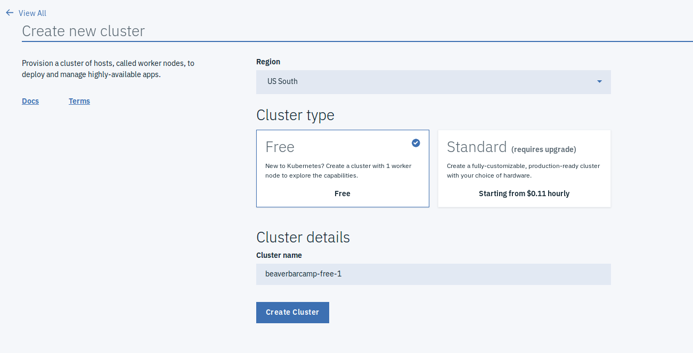
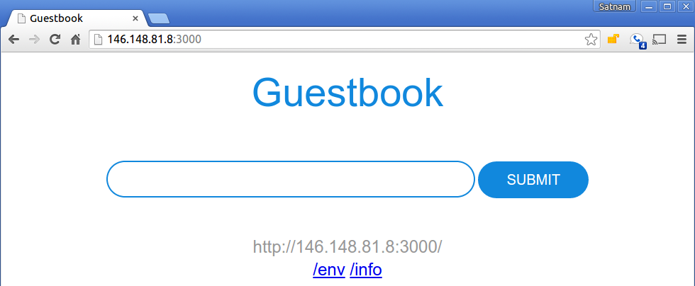

Showoff Menu
Close
Press ? for help.
All features are anonymous.
Press ? for help.
All features are anonymous.
Kubernetes 101 // IBM Developer Jumpstart
Cullen Taylor // IBM

The Kubernetes project is one of the best maintained and curated open source projects I’ve ever seen, and the communities around it are fantastic — there are really great people in every corner of that project.
Jesse Newland - Github
Account Setup
On the IBM Cloud
ibmcloud and kubectl utilitiesSign in to IBM Cloud



$ curl -sL https://ibm.biz/idt-installer | bash
[main] --==[ IBM Cloud Developer Tools for Linux/MacOS - Installer, v1.2.3 ]==--
[install] Starting Update...
[install_deps] Checking for and updating 'apt-get' support on Linux
...
...
https://console.bluemix.net/docs/cli/idt/setting_up_idt.html#add-cli https://console.bluemix.net/docs/cli/reference/bluemix_cli/get_started.html#getting-started
https://clis.ng.bluemix.net/download/bluemix-cli/latest/osx https://clis.ng.bluemix.net/download/bluemix-cli/latest/win64 https://clis.ng.bluemix.net/download/bluemix-cli/latest/linux64 https://kubernetes.io/docs/tasks/tools/install-kubectl/#install-kubectl
$ which bx
/usr/local/bin/bx
$ which kubectl
/usr/bin/kubectl
Kubernetes Concepts
.blockteal

Kubernetes manages containers. Users of kubernetes Manage higher level abstracted resources.
Three 'killer' features:
* Automatic Restarts
* Horizontal Scaling
* Service Discovery
$ kubectl get deploy
NAME DESIRED CURRENT UP-TO-DATE AVAILABLE AGE
$ cat guestbook-deployment.yaml
apiVersion: apps/v1
kind: Deployment
metadata:
name: guestbook
spec:
replicas: 3
selector:
matchLabels:
app: guestbook
...
$ kubectl create -f guestbook-deployment.yaml
deployment.apps "guestbook" created
$ kubectl get deploy
NAME DESIRED CURRENT UP-TO-DATE AVAILABLE AGE
redis-master 1 1
Quick Pause
Any Account or Cluster issues?

To be honest, the API that Kubernetes provides is the one we've always wanted.
Sam Ghods - Box
Kubernetes Deployments
On the IBM Cloud
kubectl
$ bx login --sso
$ bx api
API endpoint: https://api.ng.bluemix.net
$ bx cs clusters
Name ID State Created Workers Location Version
eggshell-kube-101 8d2ef30a4f524bdbb179d7f0b4e02125 normal 4 hours ago 3 dal10 1.9.8_1515
$ bx cs cluster-config eggshell-kube-101
OK
The configuration for eggshell-kube-101 was downloaded successfully. Export environment variables to start using Kubernetes.
export KUBECONFIG=/home/eggshell/.bluemix/plugins/container-service/clusters/eggshell-kube-101/kube-config-dal10-eggshell-kube-101.yml
$ export KUBECONFIG=/home/eggshell/.bluemix/plugins/container-service/clusters/eggshell-kube-101/kube-config-dal10-eggshell-kube-101.yml
$ git clone https://github.com/IBM/guestbook
Cloning into 'guestbook'...
remote: Counting objects: 166, done.
remote: Total 166 (delta 0), reused 0 (delta 0), pack-reused 165
Receiving objects: 100% (166/166), 88.84 KiB | 0 bytes/s, done.
Resolving deltas: 100% (92/92), done.
Checking connectivity... done.
$ cd guestbook
$ kubectl get deploy
NAME DESIRED CURRENT UP-TO-DATE AVAILABLE AGE
$ kubectl get pod
NAME READY STATUS RESTARTS AGE
$ kubectl create -f redis-master-deployment.yaml
deployment "redis-master" created
$ kubectl get deploy
NAME DESIRED CURRENT UP-TO-DATE AVAILABLE AGE
redis-master 1 1 1 1 10m
$ kubectl get replicaset
NAME DESIRED CURRENT READY AGE
redis-master-6767cf65c7 1
$ kubectl get pods
NAME READY STATUS RESTARTS AGE
redis-master-xx4uv 1/1 Running 0 1m
$ : kubectl describe deploy/redis-master
Name: redis-master
Namespace: default
CreationTimestamp: Fri, 27 Apr 2018 13:46:56 -0500
...
$ kubectl describe pod/redis-master-6767cf65c7-7kgcw
Name: redis-master-6767cf65c7-7kgcw
Namespace: default
Node: 10.186.59.66/10.186.59.66
Pause and Inquire!
What version of redis has been deployed?
How many replicas have been deployed?
What is the most recent event in the event log for the pod?
Hint! Use kubectl describe
$ kubectl create -f redis-master-service.yaml
services/redis-master
$ kubectl get services
NAME CLUSTER_IP EXTERNAL_IP PORT(S) SELECTOR AGE
redis-master 10.0.136.3 <none> 6379/TCP app=redis,role=master 1h
...
$ kubectl create -f redis-slave-deployment.yaml
deployment.apps "redis-slave" created
$ kubectl get deploy
NAME DESIRED CURRENT UP-TO-DATE AVAILABLE AGE
redis-master 1 1 1 1 23m
redis-slave 2 2 2 0 15s
$ kubectl get rs
NAME DESIRED CURRENT READY AGE
redis-master-6767cf65c7 1 1 1 23m
redis-slave-564b7bd5d9 2 2 2 30s
$ kubectl get pods
NAME READY STATUS RESTARTS AGE
redis-master-xx4uv 1/1 Running 0 25m
redis-slave-b6wj4 1/1 Running 0 1m
redis-slave-iai40 1/1 Running 0 1m
The Redis slaves get started by the deployment/replicaset with the following command:
redis-server --slaveof redis-master 6379
Why does this work?
Service Discovery!
service creates a cluster-ip
kubectl run -i --tty --rm debug \
--image=busybox --restart=Never -- shPause and Inquire!
Use the shell example to get a working debug pod
Extra: Run kubectl get pod in another terminal to see your debug pod
Hint! kubectl run -i --tty --rm debug --image=busybox --restart=Never -- sh
Pause and Inquire!
Use env and nslookup to verify that service discovery works
Extra: If you kubectl delete the redis-server pod, what happens?
Hint! kubectl run -i --tty --rm debug --image=busybox --restart=Never -- sh
$ kubectl create -f guestbook-deployment.yaml
deployment.apps "guestbook" created
$ kubectl get deploy
NAME DESIRED CURRENT UP-TO-DATE AVAILABLE AGE
redis-master 1 1 1 1 23m
redis-slave 2 2 2 0 15s
$ kubectl get rs
NAME DESIRED CURRENT READY AGE
redis-master-6767cf65c7 1 1 1 23m
redis-slave-564b7bd5d9 2 2 2 30s
$ kubectl get pods
NAME READY STATUS RESTARTS AGE
guestbook-3crgn 1/1 Running 0 2m
guestbook-gv7i6 1/1 Running 0 2m
guestbook-x405a 1/1 Running 0 2m
redis-master-xx4uv 1/1 Running 0 23m
redis-slave-b6wj4 1/1 Running 0 6m
redis-slave-iai40 1/1 Running 0 6m
$ kubectl create -f guestbook-service.yaml
$ kubectl get services
NAME CLUSTER_IP EXTERNAL_IP PORT(S) SELECTOR AGE
guestbook 10.0.217.218 146.148.81.8 3000/TCP app=guestbook 1h
redis-master 10.0.136.3 <none> 6379/TCP app=redis,role=master 1h
redis-slave 10.0.21.92 <none> 6379/TCP app-redis,role=slave 1h
...
http://<EXTERNAL_IP>:3000

$ kubectl delete -f .
deployment.apps "redis-master" deleted
service "redis-master" deleted
To be honest, the API that Kubernetes provides is the one we've always wanted.
Sam Ghods - Box
Kubernetes 101 // IBM Developer Jumpstart
Cullen Taylor // IBM